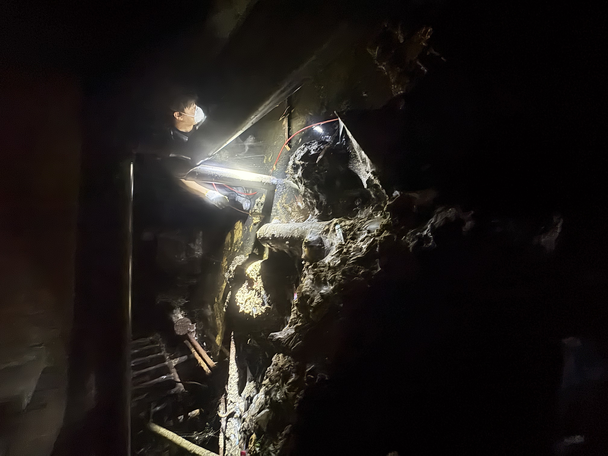
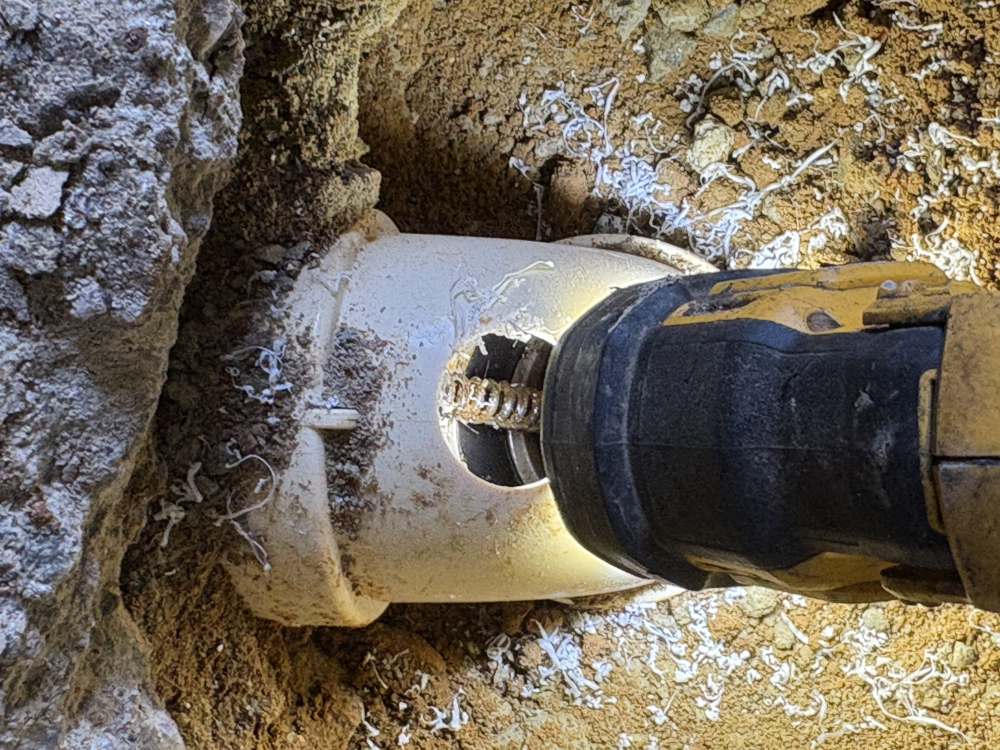
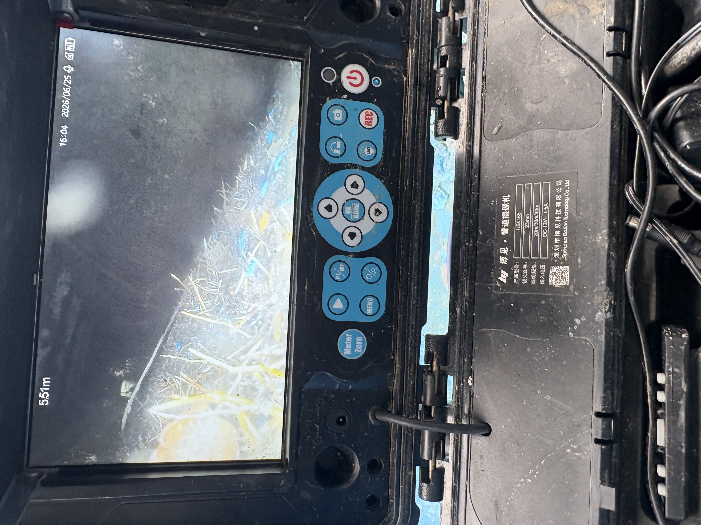

부천 싱크대 막힘
기름때와 음식물로 꽉 막힌 부천 싱크대를 시원하게 뚫어드립니다. 재발 방지 고압세척 포함.
막연한 뚫기 작업은 재발의 원인입니다. 원케어 배관 하수구는 고화질 배관 내시경으로 정확한 막힘 포인트와 원인을 먼저 파악한 후, 최적의 고압 세척 솔루션을 적용합니다.
부천 하수구막힘·싱크대막힘·변기막힘·배관막힘 모두 해결 가능합니다.
부천 하수구막힘, 싱크대막힘, 변기막힘, 배관막힘까지 — 어떤 막힘도 원케어 배관이 해결합니다.
기름때와 음식물로 꽉 막힌 부천 싱크대를 시원하게 뚫어드립니다. 재발 방지 고압세척 포함.
메인 하수관부터 가지관까지 모든 부천 하수구 막힘을 해결합니다. 내시경 진단으로 원인 파악.
복잡한 배관 구조도 정밀 진단으로 정확하게 통수합니다. 부천 아파트·주택 모두 대응 가능.
이물질 유입으로 막힌 변기를 파손 없이 신속하게 해결합니다. 부천 전지역 즉시 출동.
강력한 수압으로 배관 내부의 슬러지를 완전히 제거합니다. 재발 방지 효과가 탁월합니다.
노후되거나 파손된 배관을 새것으로 완벽하게 교체합니다. 부천 전지역 출동 가능.
싱크대, 세면대, 샤워기 등 모든 수전을 교체해 드립니다. 부천 아파트 전문.
눈에 보이지 않는 숨겨진 누수를 정밀 장비로 탐지합니다. 벽 훼손 최소화.
배관 내시경을 통해 반복되는 하수구 역류의 정확한 원인을 진단합니다. 현장 점검 결과 배수가 원활하지 않고 심한 악취가 발생하는 경우, 내시경 장비를 투입하여 오랜 기간 쌓인 기름 슬러지와 이물질이 배관 벽면에 두껍게 부착된 것을 확인했습니다.


원인 확인 후 전문 장비를 사용하여 막힌 구간을 개방하고 고압 세척을 진행합니다. 배관 벽면에 달라붙어 있던 오래된 슬러지와 오염물질을 완벽히 제거하여 확실한 통수 공간을 확보합니다. 작업 후 내시경 재점검으로 완벽한 복구 상태를 직접 확인시켜 드립니다.
세척 후 내시경으로 다시 한번 완벽한 통수 상태를 확인시켜 드립니다.
정확한 진단 후 투명하게 안내해 드립니다. 출장비 0원, 숨겨진 추가 비용 없음.
40,000원 ~
60,000원 ~
70,000원 ~
상담 문의
200,000원 ~
단순 뚫기가 아닌, 원인을 찾아 근본 해결해야 재발이 없습니다.
부천 지역 싱크대 막힘의 가장 흔한 원인은 기름때와 음식물 찌꺼기가 배관 내벽에 겹겹이 쌓이면서 발생합니다. 특히 아파트 주방 배관은 구조상 꺾이는 부분(엘보)에 슬러지가 집중적으로 쌓입니다. 부천 중동, 상동, 송내동 아파트에서 자주 접수되는 유형입니다. 단순 뚫기봉으로는 표면만 뚫릴 뿐 벽면에 붙은 기름층은 제거되지 않아 2~3개월 내 재발이 반복됩니다.
부천 변기 막힘은 이물질 투입(물티슈, 생리용품, 장난감 등)이나 오물 누적으로 트랩 부분이 막히는 경우가 대부분입니다. 부천 소사구·오정구 빌라 및 구축 아파트에서는 변기 내부 도기 노후화로 이물질이 끼기 쉬운 구조인 경우도 있습니다. 무리하게 뚫기 시도 시 변기 파손 위험이 있으므로 전문 업체 원케어 배관에 즉시 연락하세요.
부천 하수구에서 역류가 발생하거나 냄새가 올라온다면 배관 내부 슬러지 축적 또는 트랩 파손이 원인입니다. 특히 부천 원미구 구축 빌라나 오정구 단독주택은 노후 하수관이 막혀 역류가 잦습니다. 부천 하수구 역류는 방치 시 욕실 전체 침수로 이어질 수 있어 즉시 대응이 필요합니다. 원케어 배관은 배관내시경으로 역류 지점을 정확히 찾아 고압세척으로 완전히 해결합니다.
욕실 배수구 막힘은 머리카락·비누 찌꺼기가 엉켜 발생합니다. 부천 아파트 욕실 바닥 배수구는 구조상 청소하기 어려워 시간이 지날수록 악화됩니다. 배관 막힘은 메인 하수관부터 세대 내 가지관까지 다양한 구간에서 발생할 수 있어, 정밀 내시경 진단 없이는 정확한 원인 파악이 불가능합니다. 부천 전지역 원케어 배관 기술자가 신속히 출동합니다.
| 구분 | 단순 뚫기 업체 | 원케어 배관 |
|---|---|---|
| 원인 진단 | 육안 추정 | 배관내시경 정밀진단 |
| 작업 방식 | 단순 통수 스프링 | 고압세척 슬러지 완전 제거 |
| 재발 가능성 | 높음 (2~3개월 내) | 현저히 낮음 |
| 출장비 | 별도 청구 | 0원 |
| 작업 후 확인 | 없음 | 내시경 재점검 보증 |
체계적인 단계별 관리로 가장 빠르고 확실하게. 부천 전지역 동일 기준 적용.
고객님의 상황을 경청하고 즉시 전담 기술자를 배정합니다. 24시간 언제든지 전화주세요.
고화질 내시경으로 막힌 위치와 원인을 실시간으로 분석합니다. 현장에서 바로 확인 가능합니다.
현장에 최적화된 고압 세척 장비로 이물질을 완벽히 제거합니다. 부천 어떤 배관도 해결 가능.
최종 내시경 검수 및 작업 공간 청소 후 서비스를 마칩니다. 완벽한 결과를 보증합니다.
부천시 원미구 · 소사구 · 오정구 모든 동네 출장비 0원으로 즉시 출동합니다.
부천 중동 하수구막힘 · 부천 상동 하수구막힘 · 부천 소사동 하수구막힘 · 부천 원종동 하수구막힘 · 부천 고강동 하수구막힘 · 부천 춘의동 하수구막힘 · 부천 도당동 하수구막힘 · 부천 약대동 하수구막힘 · 부천 원미동 하수구막힘 · 부천 심곡동 하수구막힘 — 모든 지역 출장비 0원
부천 송내동 하수구막힘 · 부천 범박동 하수구막힘 · 부천 옥길동 하수구막힘 · 부천 괴안동 하수구막힘 · 부천 심곡본동 하수구막힘 · 부천 오정동 하수구막힘 · 부천 대장동 하수구막힘 · 부천 작동 하수구막힘 · 부천 내동 하수구막힘 · 부천 삼정동 하수구막힘 — 즉시 출동 가능
위 지역 외에도 부천 인근 수도권 전지역 출동 가능합니다. 문의 전화 주시면 바로 확인해 드립니다.
부천 하수구막힘에 대해 궁금하신 점을 모았습니다.
원케어 배관은 부천 전지역 출장비 0원입니다. 추가 비용 없이 기술자가 현장에 방문하여 점검해 드립니다. 방문 점검 후 작업에 동의하시면 진행하며, 진단만 받으셔도 비용이 발생하지 않습니다.
부천 전지역 평균 1시간 이내 도착합니다. 24시간 365일 연중무휴 긴급출동이 가능하며, 상담 즉시 가장 가까운 기술자를 배정합니다.
변기 막힘 40,000원~, 싱크대 막힘 60,000원~, 하수구 막힘 70,000원~, 누수 탐지 200,000원~입니다. 정확한 비용은 현장 진단 후 투명하게 안내해 드립니다. 출장비·진단비 모두 무료입니다.
배관 내부에 기름 슬러지와 이물질이 쌓여 부패하면서 악취가 발생합니다. 단순 뚫기로는 재발하며, 배관내시경 진단 후 고압세척으로 근본 원인을 제거해야 합니다. 원케어 배관의 고압세척 후에는 악취가 확실하게 사라집니다.
단순 통수만 하면 배관 벽면에 붙은 오염물질이 남아 재발합니다. 원케어 배관은 배관내시경으로 정확한 원인을 파악한 후 고압세척으로 배관 내부를 새것처럼 만들어 재발을 방지합니다.
네, 부천 중동·상동·소사·원종·고강동 등 모든 아파트 하수구 막힘 처리 가능합니다. 특히 아파트 구조는 배관이 복잡해 일반 업체가 해결하지 못하는 경우가 많지만, 원케어 배관은 배관내시경으로 정확한 막힘 위치를 파악한 후 고압세척으로 완벽히 해결합니다. 공동주택 공용 배관 문제도 상담 가능합니다.
시중에 판매하는 하수구 뚫기 약품이나 스프링봉은 표면의 이물질만 일시적으로 밀어낼 뿐, 배관 벽면에 굳어 있는 기름 슬러지는 제거하지 못합니다. 이 때문에 짧으면 2~3주, 길어도 2~3개월 내 재발이 됩니다. 원케어 배관의 고압세척은 배관 내부를 새것처럼 만들어 재발 가능성을 현저히 낮춥니다. 약품을 과도하게 사용하면 오히려 배관이 부식될 수 있습니다.
부천 싱크대 막힘 기본 비용은 60,000원~입니다. 막힘 정도·배관 위치·작업 난이도에 따라 달라질 수 있으며, 방문 후 현장 진단을 통해 정확한 금액을 안내해 드립니다. 출장비·진단비 모두 0원이며, 고객님이 최종 금액에 동의하신 후에만 작업을 진행합니다. 추가 비용이 발생할 경우 반드시 사전에 안내합니다.
부천 하수구 막힘 업체를 선택할 때는 ①출장비 무료 여부, ②작업 전 비용 고지 여부, ③배관내시경 장비 보유 여부, ④사후 재발 시 A/S 가능 여부를 확인하세요. 일부 업체는 저렴한 기본 비용을 내세운 뒤 현장에서 과도한 추가 비용을 청구하는 경우가 있습니다. 원케어 배관은 방문 전 예상 비용을 전화로 안내하고, 현장 진단 후 고객 동의 없이 작업을 시작하지 않습니다.
네, 365일 24시간 연중무휴로 운영합니다. 새벽, 공휴일, 주말 구분 없이 언제든지 전화 주시면 즉시 출동합니다. 긴급 상황일수록 빠른 연락을 부탁드립니다.
전문가가 실시간으로 확인하여 5분 이내에 답변해 드립니다.
부천 하수구막힘, 지금 바로 해결하세요.
010-9164-6943
부천 및 수도권 전지역 광속 출동
부천 전지역 출동비 0원
네이버 블로그에서 시공 사례 확인
부천 전지역 원케어배관의 실제 시공 현장 사진입니다. 하수구막힘·싱크대막힘·배관막힘 해결 사례를 확인하세요.







부천 하수구막힘 · 부천싱크대막힘 · 배관막힘 실제 시공 현장 사진 | 원케어배관